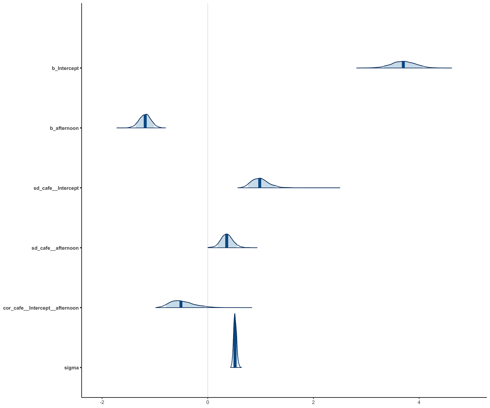
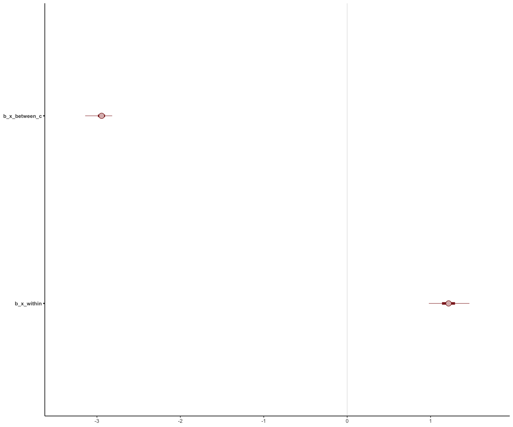
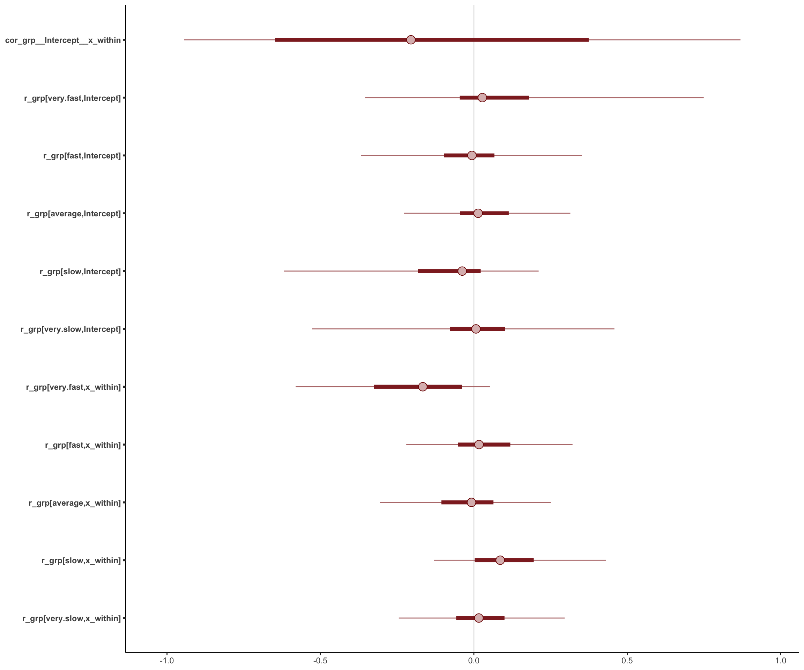
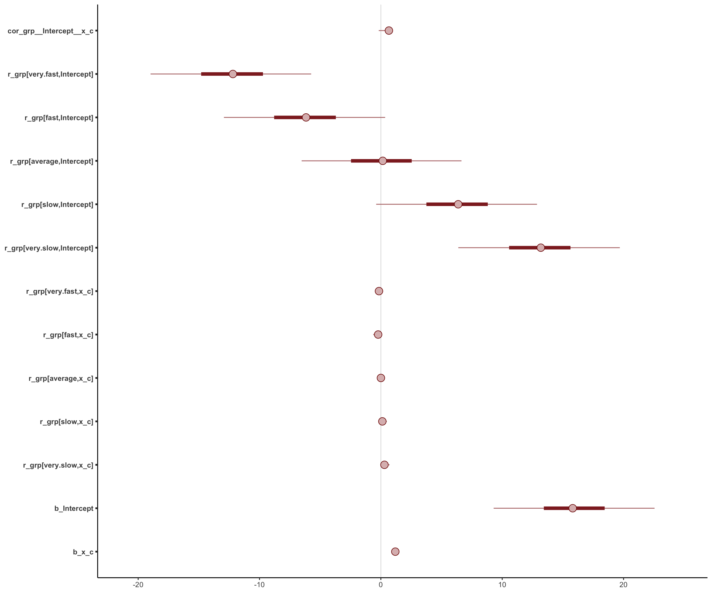

knitr::include_graphics("ml.png")
### Libraries
library("tidyverse")
library("ggplot2")
library("patchwork")
library("lubridate")
library("kableExtra")
library("gtsummary")
library("lubridate")
library("equatiomatic")
library("ggdag")
library("brms")
library("rstan")
library("rstanarm")
library("bayesplot")
library("easystats")
library("kableExtra")
library("broom")
library("tidybayes")
library("bmlm")
library("metafor")
library("scales")
library("kableExtra")
library("knitr")
if (!require(metafor)) {
install.packages("metafor")
}
# rstan options
rstan_options(auto_write = TRUE)
options(mc.cores = parallel::detectCores ())
theme_set(theme_classic())
There is much debate about terminology in multi-level modelling. In the circles I travel, the term mixed-effects model is preferred. Theres some discussion about the terminological issues on the GLMMFAQ page here. In part, this is because there are many different multi-level models. In part, the confusion owes to the evolution of nomenclature among different groups. And in part, the confusion owes to people being genuinely confused. Our task here is to walk you through the steps of relatively simple multi-level models; these will be powerful assets to your work. Howeer, we want to do more than to teach you how to write and interpret multilevel models; we want to foster basic intuitions that will help you to understand what these models are doing under the hood.
Regarding nomenclature, we prefer the terms group-varying intercept and group-varying slope to the terms random effect and random slope. The term random tends to invite confusion sampling theory requires random draws from various populations, etc. However, when we use the terms group-varying it will be important to remember that a group can include an individual who has been repeatedly measured over time.
Matti Vuorre provides an explanation for how to do metanalysis using the BRMS package here. See also, Mattis brmstools package here. We will follow Mattis approach.
The metafor package has data prepared for meta-analysis. We import the data:
# call data
# data("dat.bangertdrowns2004", package = "metafor")
#
# # obtain first 15 studies and rename columns
# dat <- dat.bangertdrowns2004 %>%
# mutate(study = paste0(author, " (", year, ")"), sei = sqrt(vi)) %>%
# select(study, yi, sei)
#
# # Truncate
# dat <- dat[,-c(5:10)] %>% as_tibble()
#
# # Remove commas in study names
# dat$study <-
# str_replace(dat$study, ",", "")
#
dat <- escalc(measure="ZCOR", ri=ri, ni=ni, data=dat.molloy2014)
dat <- dat[,-c(5:10)] %>% as_tibble()
dat$yi <- as.numeric(dat$yi)
dat$vi <- as.numeric(dat$vi)
dat <- as_tibble(dat)
names(dat) <- c("study", "year", "ni", "ri", "yi", "vi")
dat$study <- paste0(dat$study, " (", dat$year, ")")
dat$sei <- as.numeric(sqrt(dat$vi))
dat$study <- as.character(dat$study)
# Major pain in reordering
dat$study[5] <- "Christensen et al. (1995)"
tmp <- dat[5,]
dat[5,] <- dat[4,]
dat[4,] <- tmp
Here, yi is the observed outcome in effect size units, and sei is the observed sampling standard deviation (\(\sigma_i\)). (You can read more about the metafor package here).
In metanalysis we assume:
\[y_i \sim N(\theta_i, \sigma_i^2)\] Where \(\theta_i\) is the unknown true effect-size corresponding to \(y_i\), where \(\theta\) has a standard deviation that is equal to the obeserved standard error \(\sigma_i\).
In metanalysis, we assume that there is an underlying parameter which identifies the effect size of the hypothetical population of studies from which the sample of studies collected was drawn. Recall, a parameter is an abstract concept it is the property of population that we never observe. As such,
\[\theta_i \sim N(\mu, \tau^2)\]
Where \(\mu\) is the population average effect size, and \(\tau^2\), the population variance, or between-study heterogeneity.
We can write the meta-analytic model as a random intercept model:
\[y_i \sim N(\mu + \theta_i, \sigma_i^2)\\ \sigma_i \sim N(0,\tau^2)\]
The code for a simple meta-analytic model in BRMS is as follows:
Family: gaussian
Links: mu = identity; sigma = identity
Formula: yi | se(sei) ~ 1 + (1 | study)
Data: dat (Number of observations: 16)
Samples: 4 chains, each with iter = 2000; warmup = 1000; thin = 1;
total post-warmup samples = 4000
Priors:
Intercept ~ student_t(3, 0.2, 2.5)
sd ~ student_t(3, 0, 2.5)
Group-Level Effects:
~study (Number of levels: 16)
Estimate Est.Error l-95% CI u-95% CI Rhat Bulk_ESS Tail_ESS
sd(Intercept) 0.10 0.04 0.04 0.18 1.01 1045 1100
Population-Level Effects:
Estimate Est.Error l-95% CI u-95% CI Rhat Bulk_ESS Tail_ESS
Intercept 0.15 0.04 0.08 0.22 1.00 1491 2200
Family Specific Parameters:
Estimate Est.Error l-95% CI u-95% CI Rhat Bulk_ESS Tail_ESS
sigma 0.00 0.00 0.00 0.00 1.00 4000 4000
Samples were drawn using sampling(NUTS). For each parameter, Bulk_ESS
and Tail_ESS are effective sample size measures, and Rhat is the potential
scale reduction factor on split chains (at convergence, Rhat = 1).Probably that the effect size is great than .2 is .08 (or 8%)
options(width = 120)
hypothesis(m_meta, "Intercept > 0.2")
Hypothesis Tests for class b:
Hypothesis Estimate Est.Error CI.Lower CI.Upper Evid.Ratio Post.Prob Star
1 (Intercept)-(0.2) > 0 -0.05 0.04 -0.11 0.01 0.09 0.08
---
'CI': 90%-CI for one-sided and 95%-CI for two-sided hypotheses.
'*': For one-sided hypotheses, the posterior probability exceeds 95%;
for two-sided hypotheses, the value tested against lies outside the 95%-CI.
Posterior probabilities of point hypotheses assume equal prior probabilities.The forest plot graphs the posterior distribution of each estimated \(\theta_i\).
The graph shows the meta-analytic effect size \(\mu\) in the bottom row.
Here is Matti Vuorres code for making a graph. Note that Matti indicates the observed effect size with the little o. A metanalysis uses partial pooling to shrink estimates towards to the population estimate (\(\mu\)), which is the weighted average of the group means.
library(tidybayes)
library(ggdist)
# Study-specific effects are deviations + average
out_r <- spread_draws(m_meta, r_study[study,term], b_Intercept) %>%
mutate(b_Intercept = r_study + b_Intercept)
# Average effect
out_f <- spread_draws(m_meta, b_Intercept) %>%
mutate(study = "Average")
out_f
# A tibble: 4,000 x 5
.chain .iteration .draw b_Intercept study
<int> <int> <int> <dbl> <chr>
1 1 1 1 0.183 Average
2 1 2 2 0.182 Average
3 1 3 3 0.123 Average
4 1 4 4 0.110 Average
5 1 5 5 0.0619 Average
6 1 6 6 0.0612 Average
7 1 7 7 0.0742 Average
8 1 8 8 0.0730 Average
9 1 9 9 0.115 Average
10 1 10 10 0.0639 Average
# with 3,990 more rows# Combine average and study-specific effects' data frames
out_all <- bind_rows(out_r, out_f) %>%
ungroup() %>%
# Ensure that Average effect is on the bottom of the forest plot
mutate(study = fct_relevel(study, "Average")) %>%
# tidybayes garbles names so fix here
mutate(study = str_replace_all(study, "\\.", " "))
# Data frame of summary numbers
out_all_sum <- group_by(out_all, study) %>%
mean_qi(b_Intercept)
# Draw plot
out_all %>%
ggplot(aes(b_Intercept, study)) +
# Zero!
geom_vline(xintercept = 0, size = .25, lty = 2) +
stat_halfeye(.width = c(.8, .95), fill = "dodgerblue") +
# Add text labels
geom_text(
data = mutate_if(out_all_sum, is.numeric, round, 2),
aes(label = str_glue("{b_Intercept} [{.lower}, {.upper}]"), x = 1.75),
hjust = "inward"
) +
# Observed as empty points
geom_point(
data = dat %>% mutate(study = str_replace_all(study, "\\.", " ")),
aes(x=yi), position = position_nudge(y = -.2), shape = 1
)
Last week, we considered how intercepts may vary between groups, and how modelling this variation enables a model to efficiently pool information within and between clusters. In line with this approach, we have just demonstrated how meta-analysis turns on the princible of modelling group-level intercepts. Next we consider how to model variability in slopes of regression coefficients across groups. This model group-varying slopes and intercepts together requires estimating both the slopes and intercepts as drawing from a multivariate distribution in which the two paramters (intercepts and slopes) may be correlated. In a varying intercept/varying slope multi-level model, then, we estimate the covariance of group-level intercepts and group-level slopes in the same model in which we estimate the other parameters (including, of course, the group-level intercept variances and group-level slope variances, else what would there be to co-vary).
\[\begin{pmatrix} \text{variances of the intercepts} & \text{co-variances of the intercepts and slopes} \\ \text{co-variances of the intercepts and slopes} & \text{variances of the slopes} & \end{pmatrix}\]
Using mathematical notation for the matrix:
\[\begin{pmatrix} \sigma_\alpha^2 & \sigma_\alpha\sigma_\beta \rho \\ \sigma_\alpha\sigma_\beta \rho & \sigma_\beta^2 & \end{pmatrix}\]
The varianceses for the intercepts and slopes are along the diagonal, and their co-variances are along the off-diagonal. The co-variances are the products of the standard deviations \(\times\) their correlation
Here we folllow a simulation from Richard McElreaths Statistical Rethinking, which simulates a dataset in which the average wait times for a coffee in the morning at a cafe are correlated with the average wait times for a coffee in the afternoon at the same cafe.
First the basic set up of the code:
a <- 3.5 # average morning wait time
b <- (-1) # average difference afternoon wait time
sigma_a <- 1 # std dev in intercepts
sigma_b <- 0.5 # std dev in slopes
rho <- (-0.7) #correlation between intercepts and slopes
# mean
Mu <- c( a , b )
# Covariance of a and b
cov_ab <- sigma_a * sigma_b * rho
# Create a matrix with variances along the diagnols and the covariances on the off diagnols:
Sigma <- matrix( c(sigma_a^2,cov_ab,cov_ab,sigma_b^2) , ncol=2 )
## Note that we can treat the correlations and the covariances separately, which is useful for assigning priors. We won't need to assign priors today, but it is useful to have the code.
sigmas <- c(sigma_a,sigma_b) # standard deviations
Rho <- matrix( c(1,rho,rho,1) , nrow=2 ) # correlation matrix
# nmatrix multiply to get covariance matrix -- this is the same Sigma matrix as above:
Sigma <- diag(sigmas) %*% Rho %*% diag(sigmas)
Next we simulate the data
Simulate cafes and their average properties:
[,1] [,2]
[1,] 4.223962 -1.6093565
[2,] 2.010498 -0.7517704
[3,] 4.565811 -1.9482646
[4,] 3.343635 -1.1926539
[5,] 1.700971 -0.5855618
[6,] 4.134373 -1.1444539Each row is a cafe. The first column contains the intercepts and the second column contains the slopes. We can graph the correlation
library(rethinking)
a_cafe <- vary_effects[,1] # intercept
b_cafe <- vary_effects[,2] # slope
plot( a_cafe ,
b_cafe ,
col=rangi2 ,
xlab= "intercepts (a_cafe)" ,
ylab = "slopes (b_cafe)"
)
# overlay population distribution
library(ellipse)
for ( l in c(0.1,0.3,0.5,0.8,0.99) )
lines(
ellipse(Sigma,
centre = Mu,
level=l),
col=col.alpha("black",0.2)
)
Next we simulate sampling from these cafes
set.seed(22)
n_visits <- 10
afternoon <- rep(0:1, n_visits * n_cafes/2)
cafe_id <- rep( 1:n_cafes , each = n_visits )
mu <- a_cafe[cafe_id] + b_cafe[cafe_id] * afternoon
sigma <- 0.5 # std dev within cafes
wait <- rnorm( n_visits * n_cafes , mu , sigma )
d <- data.frame( cafe=cafe_id , afternoon = afternoon , wait = wait )
head(d)
cafe afternoon wait
1 1 0 3.967893
2 1 1 3.857198
3 1 0 4.727875
4 1 1 2.761013
5 1 0 4.119483
6 1 1 3.543652We can write out the math:
\[wait_i \sim N(\mu_i, \sigma) \\ \mu_i = \alpha_{\text{cafe}_i} + \beta_{\text{cafe}_i}A_i\\ \begin{bmatrix} \alpha_{\text{cafe}} \\ \beta_{\text{cafe}} \end{bmatrix} \sim \text{MVNormal} \begin{pmatrix} \begin{bmatrix} \alpha \\ \beta \end{bmatrix} \boldsymbol{S}, \end{pmatrix} \\ \boldsymbol{S} = \begin{pmatrix} \sigma_{\alpha} & 0 \\ 0 & \sigma_{\beta}\end{pmatrix} \boldsymbol{R} \begin{pmatrix} \sigma_{\alpha} & 0 \\ 0 & \sigma_{\beta} \end{pmatrix}\\ \boldsymbol{R} = \begin{pmatrix} 1 & \rho \\ \rho & 1 \end{pmatrix}\]
Each cafe has an intercept \(\alpha_i\) and a slope \(\beta_i\) that samples from a two dimensional Gaussian distribution with means \(\alpha\) and \(\beta\) and a covariance matrix \(\boldsymbol{S}\). The \(\boldsymbol{S}\) matrix factors into the a matrix for the separate standard deviations of \(\alpha\) and \(\beta\), \(\sigma_{alpha}\) and \(\sigma_{beta}\) and the correlation matrix \(\boldsymbol{R}\)
Recall that we assume our paramters are sampling from distributions. In bayesian estimation we can be explicit about this:
\[ \alpha \sim N(5,2) \\ \beta \sim N(-1,5) \\ \sigma \sim exp(1) \\ \sigma_a \sim exp(1) \\ \sigma_b \sim exp(1) \\ \boldsymbol{R} \sim LKJcorr(1) \\ \]
The LKJcorr prior assumes:
\[\boldsymbol{R} = \begin{pmatrix} 1 & \rho \\ \rho & 1 \end{pmatrix}\]
Here are some correlations the LKJ distributions
LJK = 1
LJK = 2
LJK = 4
We can estimate the model (at last):
m_vslopes <-
brm(
wait ~ 1 + afternoon + (1 + afternoon | cafe),
prior = c(
prior(normal(5, 2), class = Intercept),
prior(normal(-1, 10), class = b),
prior(exponential(1), class = sd),
prior(exponential(1), class = sigma),
prior(lkj(2), class = cor)
),
file = here::here("models", "multi-level-var-slopes"),
data = d,
family = gaussian
)
Family: gaussian
Links: mu = identity; sigma = identity
Formula: wait ~ 1 + afternoon + (1 + afternoon | cafe)
Data: d (Number of observations: 200)
Samples: 4 chains, each with iter = 2000; warmup = 1000; thin = 1;
total post-warmup samples = 4000
Priors:
b ~ normal(-1, 10)
Intercept ~ normal(5, 2)
L ~ lkj_corr_cholesky(2)
sd ~ exponential(1)
sigma ~ exponential(1)
Group-Level Effects:
~cafe (Number of levels: 20)
Estimate Est.Error l-95% CI u-95% CI Rhat Bulk_ESS Tail_ESS
sd(Intercept) 1.00 0.17 0.72 1.37 1.00 1166 1826
sd(afternoon) 0.36 0.12 0.13 0.60 1.00 1366 1072
cor(Intercept,afternoon) -0.48 0.23 -0.84 0.04 1.00 2972 2553
Population-Level Effects:
Estimate Est.Error l-95% CI u-95% CI Rhat Bulk_ESS Tail_ESS
Intercept 3.70 0.23 3.23 4.15 1.00 596 1013
afternoon -1.19 0.11 -1.41 -0.97 1.00 2031 2542
Family Specific Parameters:
Estimate Est.Error l-95% CI u-95% CI Rhat Bulk_ESS Tail_ESS
sigma 0.52 0.03 0.46 0.58 1.00 3389 2711
Samples were drawn using sampling(NUTS). For each parameter, Bulk_ESS
and Tail_ESS are effective sample size measures, and Rhat is the potential
scale reduction factor on split chains (at convergence, Rhat = 1).sjPlot::tab_model(m_vslopes)
| wait | ||
|---|---|---|
| Predictors | Estimates | CI (95%) |
| Intercept | 3.70 | 3.234.15 |
| afternoon | -1.18 | -1.41-0.97 |
| Random Effects | ||
| 2 | 0.27 | |
| 00 cafe | 1.02 | |
| 11 cafe.afternoon | 0.14 | |
| 01 | ||
| 01 | ||
| ICC | 0.77 | |
| N cafe | 20 | |
| Observations | 200 | |
| Marginal R2 / Conditional R2 | 0.254 / 0.810 | |
p1 <- brms::mcmc_plot(m_vslopes,
type = "areas",
prob = .89)
p1

Compare to a model with no prior:
Family: gaussian
Links: mu = identity; sigma = identity
Formula: wait ~ 1 + afternoon + (1 + afternoon | cafe)
Data: d (Number of observations: 200)
Samples: 4 chains, each with iter = 2000; warmup = 1000; thin = 1;
total post-warmup samples = 4000
Priors:
Intercept ~ student_t(3, 3, 2.5)
L ~ lkj_corr_cholesky(1)
sd ~ student_t(3, 0, 2.5)
sigma ~ student_t(3, 0, 2.5)
Group-Level Effects:
~cafe (Number of levels: 20)
Estimate Est.Error l-95% CI u-95% CI Rhat Bulk_ESS Tail_ESS
sd(Intercept) 1.05 0.20 0.75 1.52 1.00 1004 1757
sd(afternoon) 0.38 0.13 0.14 0.65 1.00 1192 1507
cor(Intercept,afternoon) -0.57 0.23 -0.92 -0.04 1.00 2426 1801
Population-Level Effects:
Estimate Est.Error l-95% CI u-95% CI Rhat Bulk_ESS Tail_ESS
Intercept 3.68 0.24 3.20 4.15 1.01 572 669
afternoon -1.18 0.11 -1.40 -0.96 1.00 1657 2478
Family Specific Parameters:
Estimate Est.Error l-95% CI u-95% CI Rhat Bulk_ESS Tail_ESS
sigma 0.52 0.03 0.47 0.58 1.00 2434 2753
Samples were drawn using sampling(NUTS). For each parameter, Bulk_ESS
and Tail_ESS are effective sample size measures, and Rhat is the potential
scale reduction factor on split chains (at convergence, Rhat = 1).p2 <- brms::mcmc_plot(m_vslopes_np,
type = "areas",
prob = .89)
# Comparison graph
p1 + p2 + plot_annotation(title = "Priors (a) vs Default Priors (b)", tag_levels = "a")
See: glmmFAQ
E.g. intercept varying among crossed grouping effects (e.g.site, year)
lme4::lmer(y ~ intercept + beta1 + beta2 + (1|groupA) + (1|groupB))
Correlated intercepts and slopes varying between crossed grouping effects
lme4::lmer(y ~ intercept + beta1 + beta2 + (beta1|groupA) + (beta2|groupB))
Recall that we have the equatiomatic package:
library(lme4)
library(equatiomatic)
fm1 <- lmer(Reaction ~ Days + (Days|Subject), sleepstudy)
equatiomatic::extract_eq(fm1)
\[ \begin{aligned} \operatorname{Reaction}_{i} &\sim N \left(\alpha_{j[i]} + \beta_{1j[i]}(\operatorname{Days}), \sigma^2 \right) \\ \left( \begin{array}{c} \begin{aligned} &\alpha_{j} \\ &\beta_{1j} \end{aligned} \end{array} \right) &\sim N \left( \left( \begin{array}{c} \begin{aligned} &\mu_{\alpha_{j}} \\ &\mu_{\beta_{1j}} \end{aligned} \end{array} \right) , \left( \begin{array}{cc} \sigma^2_{\alpha_{j}} & \rho_{\alpha_{j}\beta_{1j}} \\ \rho_{\beta_{1j}\alpha_{j}} & \sigma^2_{\beta_{1j}} \end{array} \right) \right) \text{, for Subject j = 1,} \dots \text{,J} \end{aligned} \]
Consider the following example from the parameters package here
And see references on that page.
We first simulate data on the relationship between typing speed and typing accuracy.
Btw, this is an interesting method for simulation, which differs frm the approach above: there is no corrlation of intercept and slope. We can discuss this approach in lab, but I wanted to flag that there are many ways to simulate data.
library(ggplot2)
library(parameters)
library(dplyr)
library(see)
set.seed(123)
n <- 5
b <- seq(1, 1.5, length.out = 5)
x <- seq(2, 2 * n, 2)
di <- do.call(rbind, lapply(1:n, function(i) {
data.frame(
x = seq(1, n, by = .2),
y = 2 * x[i] + b[i] * seq(1, n, by = .2) + rnorm(21),
grp = as.factor(2 * i)
)
}))
dp <- di %>%
group_by(grp) %>%
mutate(x = rev(15 - (x + 1.5 * as.numeric(grp)))) %>%
ungroup()
labs <- c("very slow", "slow", "average", "fast", "very fast")
levels(dp$grp) <- rev(labs)
# Within and between group demeaning.
dp <- cbind(dp,
parameters::demean(dp,
c("x", "y"),
group = "grp")
)
# I center the between group variable to recover an interpretable intercept
d <- dp %>%
dplyr::mutate(x_c = scale(x, center = TRUE, scale = FALSE))%>%
dplyr::mutate(x_between_c = scale(x_between, center = TRUE, scale = FALSE))
Graph the response at the individual level, ignoring group-level structure: typing faster predicts fewer errors:
ggplot2::ggplot(data = d,
aes(x = x,
y = y)) +
geom_point() +
geom_smooth(method = "lm") +
xlab("speed") +
ylab("errors")
m00 <- lm(y ~ x_c, data = d)
parameters::model_parameters(m00)
Parameter | Coefficient | SE | 95% CI | t(103) | p
-------------------------------------------------------------------
(Intercept) | 15.82 | 0.44 | [14.95, 16.69] | 36.09 | < .001
x_c | -1.92 | 0.18 | [-2.27, -1.56] | -10.69 | < .001However when we assess the relationship within a group one model for each group we see the opposite response
ggplot2::ggplot(data = d,
aes(x = x,
y = y,
colour = grp)) +
geom_point() +
geom_smooth(method = "lm")
We can combine the graphs:
ggplot2::ggplot(data = d,
aes(x = x,
y = y)) +
geom_smooth(method = "lm") +
geom_smooth(aes(x = x,
y = y,
colour = grp),
method = "lm") +
geom_point(aes(x = x,
y = y,
colour = grp)) +
xlab("speed") +
ylab("accuracy") +
scale_colour_viridis_d(option="magma") + theme_classic()
We can use the demeaned indicators to produce a model that distinguishes within/beween
head(d)
x y grp x_between y_between x_within
1 8.5 4.439524 very fast 10.5 7.084031 -2.0
2 8.7 4.969823 very fast 10.5 7.084031 -1.8
3 8.9 6.958708 very fast 10.5 7.084031 -1.6
4 9.1 5.670508 very fast 10.5 7.084031 -1.4
5 9.3 5.929288 very fast 10.5 7.084031 -1.2
6 9.5 7.715065 very fast 10.5 7.084031 -1.0
y_within x_c x_between_c
1 -2.6445067 1.0 3
2 -2.1142086 1.2 3
3 -0.1253227 1.4 3
4 -1.4135227 1.6 3
5 -1.1547433 1.8 3
6 0.6310339 2.0 3m0 <- lme4::lmer(y ~ x_between_c + x_within + (1|grp), data = d)
parameters::model_parameters(m0)
# Fixed Effects
Parameter | Coefficient | SE | 95% CI | t(100) | p
-------------------------------------------------------------------
(Intercept) | 15.82 | 0.09 | [15.64, 15.99] | 175.85 | < .001
x_between_c | -2.93 | 0.04 | [-3.02, -2.85] | -69.22 | < .001
x_within | 1.20 | 0.07 | [ 1.06, 1.35] | 16.22 | < .001
# Random Effects
Parameter | Coefficient
---------------------------------
SD (Intercept: grp) | 0.00
SD (Residual) | 0.96#equatiomatic::extract_eq(m1)
We can estimate whether the within-group speedslopes vary by groups:
head(d)
x y grp x_between y_between x_within
1 8.5 4.439524 very fast 10.5 7.084031 -2.0
2 8.7 4.969823 very fast 10.5 7.084031 -1.8
3 8.9 6.958708 very fast 10.5 7.084031 -1.6
4 9.1 5.670508 very fast 10.5 7.084031 -1.4
5 9.3 5.929288 very fast 10.5 7.084031 -1.2
6 9.5 7.715065 very fast 10.5 7.084031 -1.0
y_within x_c x_between_c
1 -2.6445067 1.0 3
2 -2.1142086 1.2 3
3 -0.1253227 1.4 3
4 -1.4135227 1.6 3
5 -1.1547433 1.8 3
6 0.6310339 2.0 3options(width = 120)
# Shows the prior
parameters::model_parameters(m1, prior = TRUE, effects = "all")
# Fixed effects
Parameter | Median | 89% CI | pd | % in ROPE | Rhat | ESS | Prior
------------------------------------------------------------------------------------------------------------
(Intercept) | 15.81 | [15.59, 16.03] | 100% | 0% | 1.003 | 651.00 | Student_t (df=3) (15.70 +- 8.80)
x_between_c | -2.94 | [-3.14, -2.83] | 100% | 0% | 1.048 | 79.00 | Uniform
x_within | 1.22 | [ 0.99, 1.46] | 100% | 0.40% | 1.009 | 593.00 | Uniform
# Fixed effects sigma
Parameter | Median | 89% CI | pd | % in ROPE | Rhat | ESS | Prior
----------------------------------------------------------------------------------------------------
sigma | 0.92 | [0.82, 1.02] | 100% | 0% | 1.006 | 870.00 | Student_t (df=3) (0 +- 8.80)
# Random effects SD/Cor: grp
Parameter | Median | 89% CI | pd | % in ROPE | Rhat | ESS | Prior
-------------------------------------------------------------------------------------------
(Intercept) | 0.18 | [ 0.00, 0.68] | 100% | 88.25% | 1.092 | 35.00 |
x_within | 0.21 | [ 0.00, 0.46] | 100% | 96.17% | 1.006 | 680.00 |
Intercept ~ x_within | -0.21 | [-1.00, 0.72] | 59.38% | 60.95% | 1.004 | 621.00 | color_scheme_set("red")
p_m1 <- bayesplot::mcmc_intervals(m1,
regex_pars = c("b_x_between","b_x_within"))
p_m1

Note that we are adjusting for whether within-group speed differs by group, and if so weather these differences are correlated with the group-level intercepts. My head is exploding here
In any case, graphing these parameters shows nothing is going on, which is to be expected because the simulation did not engineer anything to be going on:
color_scheme_set("red")
p_m1 <- bayesplot::mcmc_intervals(m1,
regex_pars = c("r_"))
p_m1

What if we were to ignored between and within and between indicators and run an ordinary multi-level model? We would then write:
Which produces:
Family: gaussian
Links: mu = identity; sigma = identity
Formula: y ~ x_c + (1 + x_c | grp)
Data: d (Number of observations: 105)
Samples: 4 chains, each with iter = 2000; warmup = 1000; thin = 1;
total post-warmup samples = 4000
Priors:
Intercept ~ student_t(3, 15.7, 8)
L ~ lkj_corr_cholesky(1)
sd ~ student_t(3, 0, 8)
sigma ~ student_t(3, 0, 8)
Group-Level Effects:
~grp (Number of levels: 5)
Estimate Est.Error l-95% CI u-95% CI Rhat Bulk_ESS Tail_ESS
sd(Intercept) 10.53 3.51 5.87 19.21 1.00 1500 1796
sd(x_c) 0.34 0.25 0.05 0.91 1.00 900 959
cor(Intercept,x_c) 0.56 0.37 -0.37 0.99 1.00 2075 2251
Population-Level Effects:
Estimate Est.Error l-95% CI u-95% CI Rhat Bulk_ESS Tail_ESS
Intercept 15.91 4.05 7.95 24.08 1.00 1212 1704
x_c 1.19 0.20 0.82 1.54 1.00 1714 1519
Family Specific Parameters:
Estimate Est.Error l-95% CI u-95% CI Rhat Bulk_ESS Tail_ESS
sigma 1.01 0.07 0.87 1.16 1.00 3706 2300
Samples were drawn using sampling(NUTS). For each parameter, Bulk_ESS
and Tail_ESS are effective sample size measures, and Rhat is the potential
scale reduction factor on split chains (at convergence, Rhat = 1).Note that the multi-level model pooled information efficiently, and we have reversed the speed\(\rightarrow\)accuracy illusion that the ordinary regression model gave us above.
Plotting the results tells the story:
color_scheme_set("red")
p_m2 <- bayesplot::mcmc_intervals(m2,
regex_pars = c("r_","b_"))
p_m2

Although the average response falls around 15 errors at the centered speed, theres huge group level variability. In the very fast intercept there are many few errors at this level than there are at the very slow intercept, and we find a gradient in between.
We can generate expectation plots for the groups and this tells the story:
library(brms)
out_f <- conditional_effects(
m2,
"x_c",
point_args = list(alpha = 0.1)
)[[1]]
out_r <- conditional_effects(
m2,
"x_c",
conditions = distinct(d, grp),
re_formula = NULL,
points = TRUE,
point_args = list(alpha = 0.1)
)[[1]]
out_r %>%
ggplot(aes(x_c, estimate__)) +
geom_ribbon(
data = out_f,
aes(ymin = lower__, ymax = upper__),
alpha = .1
) +
geom_line(data = out_f, size = 2) +
geom_line(aes(group = grp), alpha =.5) +
xlab("speed") +
ylab("error") +
ggtitle("Typing speed predicts fewer errors but faster typers make fewer errors")
Another approach to graphing;
# uncertainty of the posterior distribution
pp <- posterior_predict(m2)
# graph
plot(
ggeffects::ggpredict(m2, ,
terms = c("x_c","grp"),
type = "random"),
add.data = pp
)
Im not sure Im sold yet on within and between group demeaning because it would appear to lose the benefits of pooling and shrinkage that we get from multi-level models (the benefits of regularisation). I imagine there will be increasing discussion of this approach in the years ahead. For this reason I thought you should know about it.
Meantime, some quotations about group-mean centering:
Unfortunately, group mean centering changes the meaning of the entire regression model in a complicated way. If we use grand mean centering, we get different regression slopes for variables that are involved in an interaction, and different variance components, but we have an equivalent model, with identical deviance and residual errors. Another way to describe this situation is to state that we have specified a different parameterization for our model, meaning that we have essentially the same model, but transformed in a way that makes it easier to interpret. Using straightforward algebra, we can transform the grand mean centered estimates back to the values we would have found by analyzing the raw scores. Group mean centering, on the contrary, is not a simple reparameterization of a model, but a completely different model. We will find a different deviance, and transforming the estimated parameters back to the corresponding raw score estimates is not possible. The reason is that we have subtracted not one single value, but a collection of different values from the raw scores.
Excerpt From: Joop J. Hox, Mirjam Moerbeek & Rens van de Schoot. Multilevel Analysis. Apple Books.
Group mean centering of an explanatory variable implies less effective modeling than using raw scores, simply because all information concerning differences between groups is removed from that variable. It would seem reasonable to restore this information by adding the aggregated group mean again as an additional group-level explanatory variable. But this adds extra information about the group structure, which is not present in the raw scores, and therefore we will obtain a model that fits better than the raw score model. If the effect of group mean centering is analyzed in detail, it appears that group mean centering is an implicit, complicated way to change the meaning of individual- and group-level effects, including the interpretation of cross-level interactions. My recommendation is that novice users of multilevel models should apply a great deal of caution in using group mean centering. If the theory behind the modeling strongly suggests frog pond or similar effects (see Enders & Tofighi, 2007; Hofmann & Gavin, 1998), group centering is an attractive approach, but the users should be keenly aware of the issues they are facing in interpretation.
Excerpt From: Joop J. Hox, Mirjam Moerbeek & Rens van de Schoot. Multilevel Analysis. Apple Books.
If you see mistakes or want to suggest changes, please create an issue on the source repository.
Text and figures are licensed under Creative Commons Attribution CC BY-NC-SA 4.0. Source code is available at https://go-bayes.github.io/psych-447/, unless otherwise noted. The figures that have been reused from other sources don't fall under this license and can be recognized by a note in their caption: "Figure from ...".
For attribution, please cite this work as
Bulbulia (2021, May 11). Psych 447: Mixed-effects/Multi-level models (continued), with excursion into metanalysis. Retrieved from https://vuw-psych-447.netlify.app/posts/10_1/
BibTeX citation
@misc{bulbulia2021mixed-effects/multi-level,
author = {Bulbulia, Joseph},
title = {Psych 447: Mixed-effects/Multi-level models (continued), with excursion into metanalysis},
url = {https://vuw-psych-447.netlify.app/posts/10_1/},
year = {2021}
}